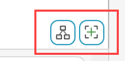
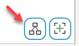
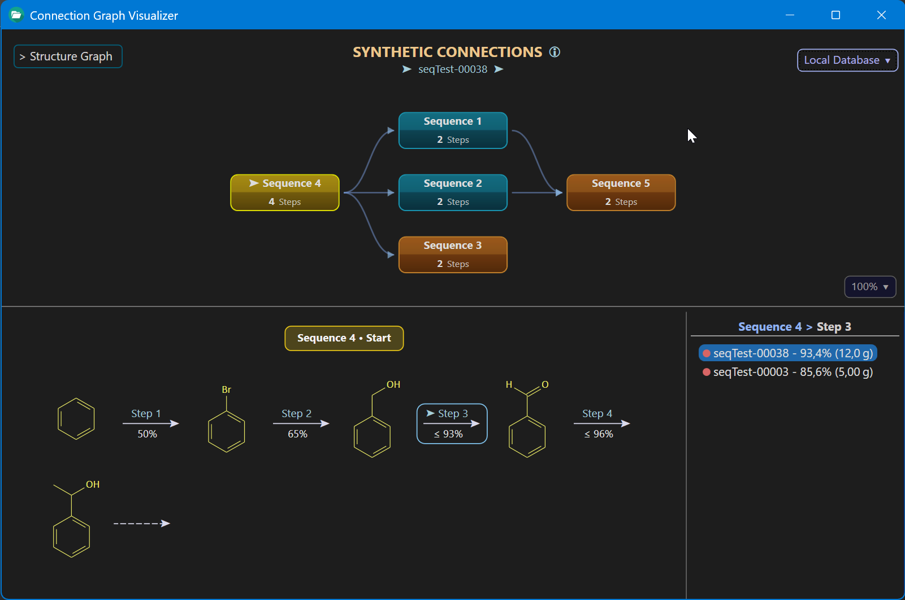
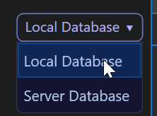
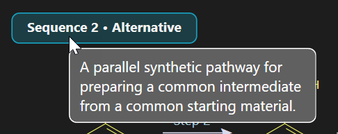
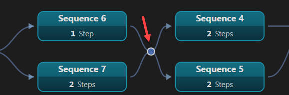
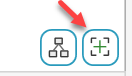
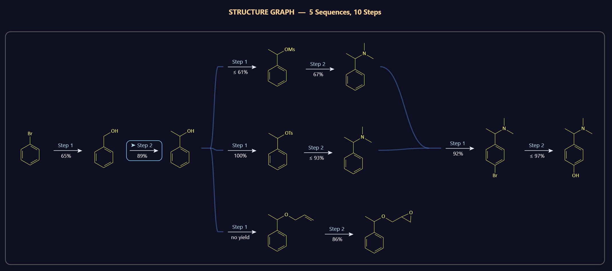
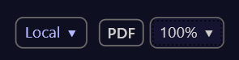

Synthetic Connections
Introduction
Phoenix ELN allows to visually map all synthetic pathways leading to and originating from the reaction of the current experiment, based on the analysis of all available ELN experiments - either your own local ones, or the experiments of all users within your organization (via an optional in-house ELN server database). Since the complexity of possible connections increases with accumulating number of experiments, mathematical graph theory is utilized to handle also complex scenarios.
There are two connection graph types available, both accessible from the bottom right corner of the reaction sketch area in the experiment protocol:

- Synthetic Connections (left button) represents a connection graph based on sequences. This abstraction allows the display of complex connection networks in a condensed and interactive manner.
- Scheme Connections (right button) represents the synthetic connections based on chemical structures instead of sequences. As this can be space demanding, this graph is displayed in full screen mode.
Sequence Connections
Click the marked button to access this analysis type:

As the connections graph originates from the reaction of the current experiment, its sequence box as well as the its synthetic step (the lower window part) are marked by a ➤ symbol. Additionally, the resulting start sequence is color coded accordingly.

- Each sequence box in the upper part of the window represents a unique succession of synthetic steps. Clicking one reveals the individual steps it represents in the lower window section.
- Clicking a step arrow shows all associated experiments in the right-side panel, sorted by yield.
- Clicking one of the listed experiments opens it in the protocol area, for examination of its contents. Note that only finalized server experiments are enabled for examination, unfinalized ones are considered work in progress. All experiments are enabled, however, when working with your local database.
This analysis can be toggled to run either on your own local experiments, or on the experiments of all ELN users stored in an optional in‑house server database:

The sequence boxes are color-coded to indicate their role in the connection graph. Hovering the mouse pointer over the sequence title in the steps area (lower window section) informs about their specific role:

The merge point is a special graph element representing a common intermediate resulting from multiple incoming sequences and consumed by multiple outgoing sequences.

The Structure Graph constructs the same network as above, but based on molecular structures instead of sequences.

Clicking the Structure Graph button opens this space demanding graph type in full screen mode. Its step numbers are assigned per underlying sequence, so they are not unique in the overall scheme.

The controls in the top right screen corner let you toggle between local and server database (if present), export the graph to PDF (landscape mode), and to change the magnification level:
